Diese Woche
| Höchste Temperatur außen | 7,1°C | 15:13:31 (Dienstag) |
| Niedrigste Temperatur außen | -1,0°C | 07:26:47 (Dienstag) |
| Höchste Temperatur innen | 21,7°C | 20:59:27 (Montag) |
| Niedrigste Temperatur innen | 21,0°C | 03:10:49 (Dienstag) |
| Höchster Hitze-Index | 7,1°C | 15:13:31 (Dienstag) |
| Niedrigster Windchill | -1,0°C | 00:30:15 (Dienstag) |
| Höchster Taupunkt | -0,9°C | 09:46:52 (Montag) |
| Niedrigster Taupunkt | -5,8°C | 19:59:36 (Dienstag) |
| Höchste Luftfeuchte | 81% | 00:04:36 (Montag) |
| Niedrigste Luftfeuchte | 45% | 15:33:34 (Dienstag) |
| Höchster Luftdruck | 1019 mbar | 09:12:10 (Dienstag) |
| Niedrigster Luftdruck | 1005 mbar | 00:04:36 (Montag) |
| Regen gesamt | 0,3 mm | |
| Max. Regen-Rate | 1,2 mm/h | 13:27:43 (Montag) |
| Max. Windgeschwindigkeit | 5,4 m/s N/A | 13:42:46 (Montag) |
| Wind (Durchschnitt) | 0,6 m/s | |
| Wind (RMS) | 0,9 m/s | |
| Geschwindigkeit | 0,4 m/s | |
| Vorwiegende Windrichtung | 45° |
Dieser Monat
| Höchste Temperatur außen | 7,7°C | 01.02.2018 14:41:56 |
| Niedrigste Temperatur außen | -4,8°C | 08.02.2018 07:35:01 |
| Höchste Temperatur innen | 22,2°C | 08.02.2018 21:58:10 |
| Niedrigste Temperatur innen | 20,5°C | 06.02.2018 22:45:03 |
| Höchster Hitze-Index | 7,7°C | 01.02.2018 14:41:56 |
| Niedrigster Windchill | -4,8°C | 08.02.2018 07:35:01 |
| Höchster Taupunkt | 3,9°C | 01.02.2018 00:02:44 |
| Niedrigster Taupunkt | -11,0°C | 06.02.2018 18:32:13 |
| Höchste Luftfeuchte | 85% | 01.02.2018 00:02:44 |
| Niedrigste Luftfeuchte | 41% | 06.02.2018 14:30:46 |
| Höchster Luftdruck | 1032 mbar | 05.02.2018 10:19:25 |
| Niedrigster Luftdruck | 1000 mbar | 01.02.2018 00:02:44 |
| Regen gesamt | 3,0 mm | |
| Max. Regen-Rate | 2,4 mm/h | 03.02.2018 01:37:30 |
| Max. Windgeschwindigkeit | 5,4 m/s N/A | 12.02.2018 13:42:46 |
| Wind (Durchschnitt) | 0,4 m/s | |
| Wind (RMS) | 0,7 m/s | |
| Geschwindigkeit | 0,3 m/s | |
| Vorwiegende Windrichtung | 3° |
Statistik und Diagramme der Woche
 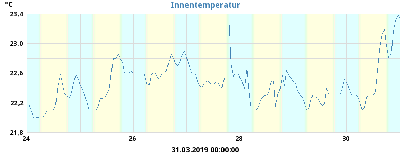
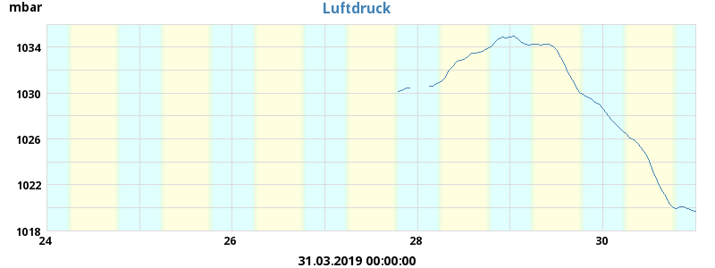
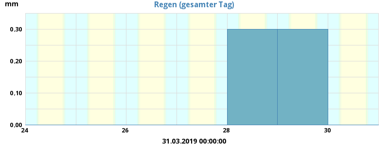
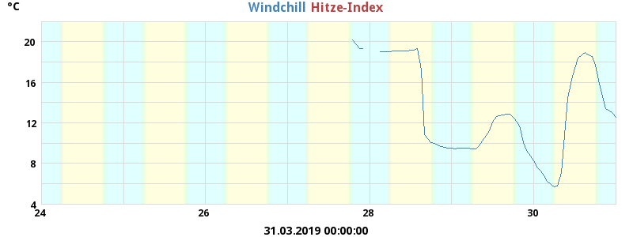
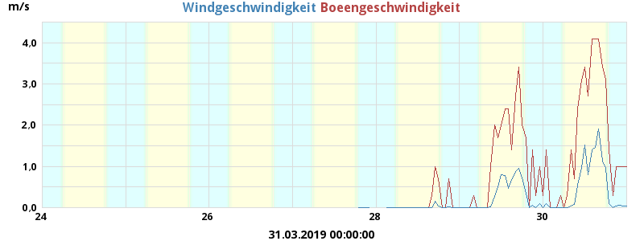
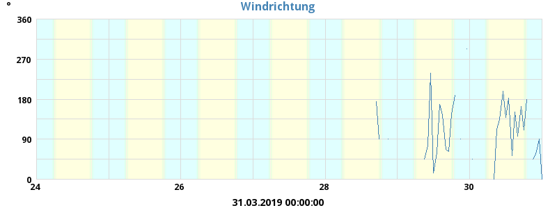
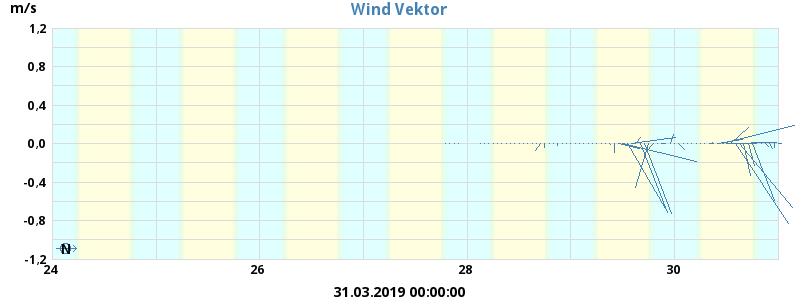
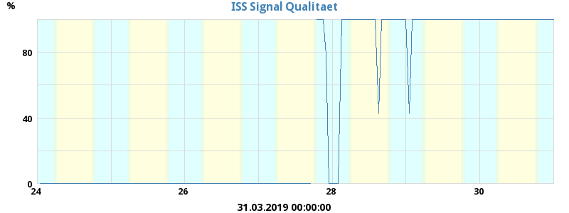
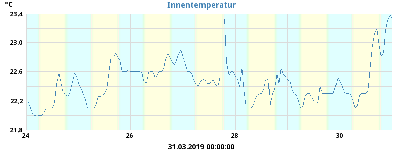
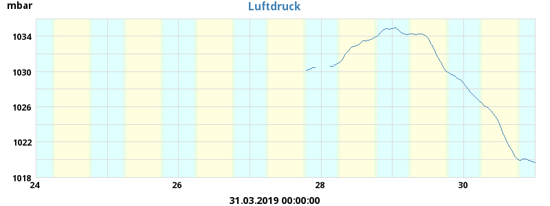
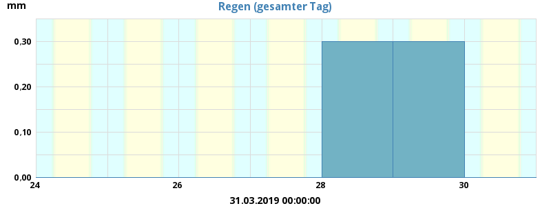
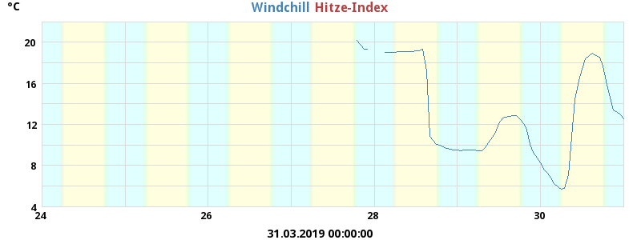
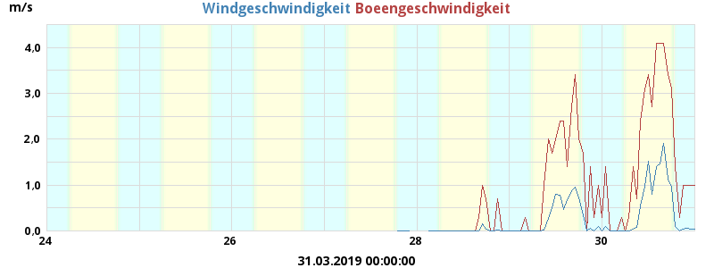
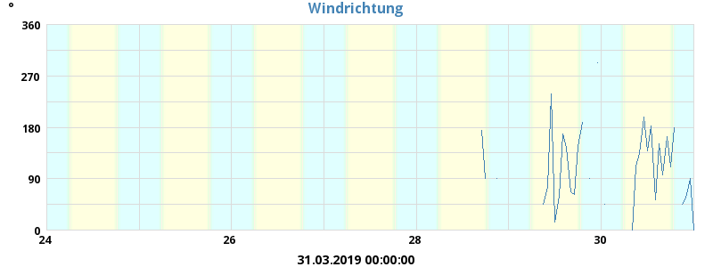
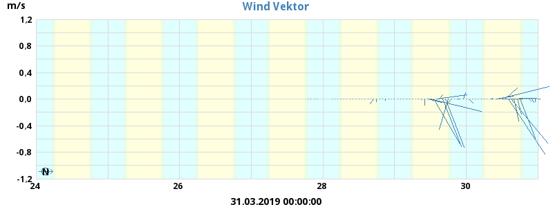
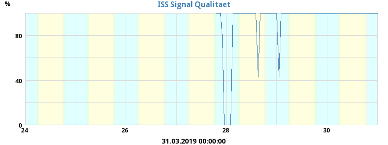